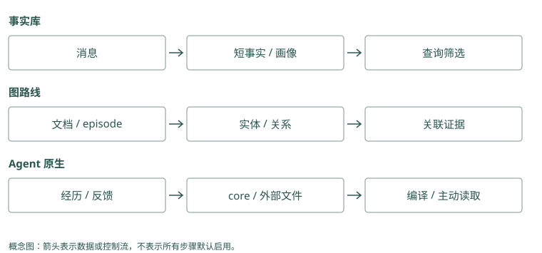

统一心智模型
模型为什么没有自动记住上次对话
假设第一次对话的输入是“Atlas 发布失败了”，模型回答“下次先检查数据库迁移”。第二次调用时，你只发送“帮我发布 Atlas”。第一次的文字若不在输入里，模型就没有这段经历可以参考。即使应用把第一次对话存到数据库，数据库也不会自动出现在模型的输入中。
可以把模型想成一个正在做题的人：桌上摊开的几页纸是当前上下文，柜子里的资料是外部存储。柜子再大，也需要有人选出相关的一页放到桌上。这个比喻只解释访问关系，不表示模型真的按人的方式记忆。
最简单的记忆程序因此做两件事：任务结束后保存有用信息，下次任务开始前取出相关信息。模型参数不必变化，新的输入就足以改变它的行为。
Mem0：昨天存了“Atlas 发布前检查迁移”，今天只给模型“帮我发布 Atlas”，模型未必知道昨天的事。应用先搜索，把教训加进今天的消息，才让这条记录影响回答。
Graphiti：昨天保存了“Atlas 的批准人是 Lin”。今天模型不会自己读图；应用查出关系和来源，放进问题里，模型才有证据回答批准人。
源码与边界（选读）
Mem0：外部状态通过 search 回到输入
初始化 Memory，就是给记忆程序接好整理文字的模型、将文字变成向量的服务、保存事实的后端以及历史数据库。之后调用 add() 保存教训，改变的是这些外部记录，回答模型的参数并没有被重新训练。数据库即使关闭后还能保留 M1，也不等于下一轮模型已经知道 M1。
第二次发布前，应用调用 search()，得到类似“编号 M1、正文为发布前检查迁移、相关分数为某值”的结果。应用把正文加入本轮消息，模型才读到教训。history() 用来查看一条记录怎么改过，不是自动送给模型的对话历史。
Graphiti：图也在模型窗口之外
Graphiti 也需要接好几项依赖。Driver 是访问图数据库的连接程序；LLM client 是请求提取模型的客户端；embedder 把对象或关系文字变成搜索用向量。它们分别负责访问、理解与检索，不是三个会一起替你发布项目的 Agent。
add_episode() 可以把材料整理成对象和关系；基本 search() 返回 EntityEdge，也就是事实边对象。应用从 fact 字段取出可读陈述，例如“Atlas 由平台组维护”，再补来源和日期，交给回答模型。库里还有多少其他节点，不会自动扩大这次模型看到的内容。
让一条发布教训走完整个过程
第一次发布，我们有下面的材料：
项目：Atlas
命令结果：发布失败，数据库版本不匹配
用户补充：下次发布前先检查数据库迁移
来源：对话 session-42 和失败工具调用 tool-7保存这些原始材料叫捕获。Agent Beacon 主要帮助做这一步，它把不同工具和运行环境产生的活动整理成可以回看的事件。事件还不是教训：“命令失败”可能有很多原因，不能直接概括成“以后禁止发布”。
下一步，从原话中提取一条有边界的陈述：“Atlas 发布前需检查数据库迁移，来源 session-42。”这叫编码或提取。Mem0 会用模型从消息中提取类似的短事实。提取让长对话变短，也引入风险：模型可能把用户没有说过的原因补出来，因此我们留下来源。
接着，把这条陈述归到 Atlas 项目、发布流程，并存起来。这是组织和存储。只用文字也能起步，但还需知道谁有权读取。另一个用户的同名 Atlas 项目，不能因为名字一样就共享这条记录。
Mem0：原话是“昨天漏查迁移，Atlas 发布失败”。保留原话，再整理出“Atlas 发布前检查迁移”。以后问流程，取短记录；追查当时发生什么，按应用保存的来源回看原话。
Graphiti：把失败报告留作材料 E1，再保存“Atlas 这次发布漏查迁移，来源 E1”。若后来确认失败另有原因，就能找到要纠正的陈述及其出处。
源码与边界（选读）
Mem0：一段事件会分成消息记录与事实 payload
用户只说“下次也这样”，单独这一句无法形成准确教训。Mem0 会把本次消息与同范围最近十条消息一起交给提取器，还找十条相关旧记录供比较。提取器可能由此写出“Atlas 发布前检查迁移”，而不是把“这样”原样存成无法复用的卡片。
源码中负责这段工作的是 _add_to_vector_store()。模型输出的 text 是候选正文，存储包中的 data 保存它；hash 是查重指纹，词形文本是便于关键词匹配的规范文字。正常收尾另存消息历史。工具调用 tool-7 的具体结果若要回查，应用还需保留这个来源映射，短事实没有包含完整操作过程。
Graphiti：实体身份决定边接到哪里
Graphiti 先把这次输入留成材料对象，类名叫 EpisodicNode。提取模型可能暂时给 Atlas 一个新编号，随后查旧图发现 Atlas 已有正式编号 N1，程序就把新编号换成 N1。这个替换表叫 UUID 映射，解决“同一对象不要每次新建一份”的问题。
extract_nodes() 找对象，resolve_extracted_nodes() 核对对象身份，关系提取与解析再把两端接到正式编号。若 Alice 的 Atlas 被错认成 Bob 的 Atlas，教训文字再准确也会归错项目。排查时先看原文和节点身份，再看关系，不要只检查陈述是否通顺。
第二次发布：先找，再读，再做
第二次用户问“帮我发布 Atlas”，应用从当前登录身份得到可读项目范围，在这个范围里搜索发布相关记录。搜索得到的几条记录叫候选，因为它们还没确定要全部放进模型输入。
程序选择发布教训，连同来源组成一段上下文：
历史观察，适用于 Atlas：
发布前需检查数据库迁移。
来源：session-42；请结合当前仓库状态验证。
当前任务：帮我发布 Atlas。模型现在可以先调用迁移检查工具，再决定是否发布。把选出的记录组织成这段输入，叫上下文组装。记忆系统并没有替模型执行检查；它提供了让这次决策少犯旧错的信息。
若检查真的避免了失败，我们可以记录一次有帮助的使用结果。若用户指出“上次原因其实是配置文件错误”，我们就要纠正原教训。更新、纠正和降低旧记录的影响，统称为演化或生命周期管理。
Mem0：Alice 问“发布 Atlas”。应用只查 Alice 的记录，找到“先检查迁移”，把这句话放进模型输入；检查工具随后报告“迁移未完成”，本次发布暂停。
Graphiti：应用查到“Atlas 由平台组维护”和“Lin 批准正式发布”，再核对两份原文。模型知道该找 Lin，但仍要等本次批准，不能把历史关系当批准票。
源码与边界（选读）
Mem0：过滤、评分、格式化之后还差一次组装
应用先从已登录身份确定 Alice，而不是让模型猜用户是谁，再用 filters={"user_id": "alice"} 限定搜索。Filters 是筛选条件，表示只在这个可读集合里找；语义候选则是在这个范围内按意思找出的待选记录。两者分别解决可见范围和相关程度。
Mem0 再参考关键词和对象关联排序，返回 MemoryItem。应用取它的 memory 正文及来源 metadata，写进当前消息。例如明确标注“这是上次的教训，先核验当前迁移状态”。搜索没有执行检查工具，也没有保证模型一定遵循，应另查看实际动作。
Graphiti：返回的是事实边，原文需要另查
基本搜索可能带回一条关系：“Atlas 的正式发布需要迁移检查。”这只是从材料中整理出的陈述。边里的 episodes 是来源材料编号列表，应用可按编号读原文，核对是不是只针对一次演练。它没有把每份完整材料直接塞进结果。
默认配方 EDGE_HYBRID_SEARCH_RRF 中，edge 指事实边，hybrid 指多种找法，RRF 指按名次合并的方法，第 5 章会手算。需要同时读取对象、材料或对象集合摘要时，使用高级 search_() 配置。理解返回单位之后，再决定哪些部分给模型看。
三种架构，就是三种放资料的方法
事实库把可复用陈述写成一条条记录。Mem0 搜索这些记录；Memobase 更倾向提前整理用户偏好字段。前者像从卡片盒里挑卡片，后者像直接打开用户资料页。任务不同，合适的读取方式也不同。
图结构额外保存对象之间的连接。假设一份资料写“Atlas 归平台组”，另一份写“平台组发布由 Lin 批准”，只搜 Atlas 可能漏掉后一份。Graphiti、Cognee 和 HippoRAG 用不同方式利用连接，帮助取回跨资料证据。图要先建立，错误连接也会把搜索引向错误对象。
Agent 自管理上下文让模型通过工具决定何时读旧资料，或者修改以后常驻的短规则。Letta Code 会保留小段核心记忆，详细资料放在按需打开的文件里。它省去了每次加载全部内容的费用，但模型可能没有意识到需要打开那份文件。
这些方法可以组合。Atlas 的稳定约束常驻，工具原始输出放历史库，批准关系放图；最终仍要有一个明确的组装位置，决定本次到底给模型看什么。
Mem0：存三条文字：“默认中文”“发布前检查迁移”“Atlas 使用 PostgreSQL”。问数据库时挑第三条，不必把所有资料塞进每轮消息。
Graphiti：保存“Atlas→维护团队→平台组”“平台组→发布批准人→Lin”。问批准人时，应用沿这两个具体联系找证据，而不是只挑包含 Atlas 的句子。
源码与边界（选读）
Mem0：实体索引没有把事实库变成时间关系图
Mem0 可以给 Atlas 建一个对象索引，记着涉及它的卡片 M1、M2。这份清单叫 linked_memory_ids，读作“与这个对象有关的记录编号”。问题里提到 Atlas，相关卡片可得到额外加分。
清单只说明 M1、M2 谈过 Atlas，没有表示“Atlas 属于平台组，平台组由 Lin 批准”这样的方向与关系。若 M1 只告诉你维护团队，应用还可继续问平台组的批准人；这次追加查询就是第二步查找，需要明确安排，不能因存在对象索引就假设已经完成。
Graphiti：图结构与摘要承担不同工作
在 Graphiti 中，平台组对象的 summary 可能写“维护 Atlas，承担发布审批等工作”，方便了解团队；具体边的 fact 才分别说明维护谁、由谁批准；episode 保留当时输入的资料。读摘要像看简介，读关系和原文像核对两条具体凭据。
要回答 Atlas 的批准人，检查维护与批准两条边及来源，不能仅从简介推断。常驻 core 指每轮都发给模型的小段规则；主动工具循环指模型提出查询、应用执行、结果再回给模型。Graphiti 没有在建图时替应用完成这些宿主流程，也不会自动授予发布权限。
记忆怎样改变一次决策
再看第二次发布。如果模型只收到“帮我发布 Atlas”，它通常会根据当前仓库和已有知识拟定计划。这个计划可能合理，却没有理由专门关注上次漏掉的迁移步骤。放入发布教训后，计划有了一个具体的检查对象：数据库结构是否与即将发布的版本兼容。记忆的作用可以在这里被观察到，不必用“助手更懂我了”来描述。
不过，历史教训不能替代当前检查。上次数据库版本不匹配，不意味着今天仍然不匹配。助手应把记忆当作提出检查的依据，再用这次工具结果决定继续还是停止。假设当前检查通过，正确行为是继续后面的发布流程；如果助手仅凭旧失败记录宣布“Atlas 无法发布”，就是把过去的事件误当成现在的状态。
这一区别也解释了为什么我们同时保存事件和教训。事件回答“上次发生了什么”，教训帮助决定“这次先关注什么”，当前工具结果回答“现在是否满足条件”。三者在输入里最好有清楚的身份。如果把它们压成一句“Atlas 的数据库有问题”，模型就很难知道该重试、检查还是拒绝。
可以把完整的调用过程想成一次交接。任务结束时，程序为下一次工作留下有边界的记录；任务开始时，程序挑出相关记录，交给模型；模型执行后，程序再保存新的观察。每次交接都可能丢信息，因此排查时沿着原文、记录、候选、最终输入和动作逐步查看。数据库里有记录，只证明交接的第一段完成了。
Mem0：不提供教训时，助手计划“直接发布”；提供“先检查迁移”后，计划多了检查步骤。记录到底传入了哪句话，再观察检查是否真的执行，才能说记忆起了作用。
Graphiti：没有批准关系时，助手不知道找谁；提供两条已核验关系后，它把“请 Lin 审批”加入计划。若只是回答里提了 Lin，却照常越过审批，仍不算成功。
源码与边界（选读）
Mem0：观察计划变化需要记录实际注入
做一次教学对照：同一任务先只发“发布 Atlas”，另一次额外发“历史教训要求先检查迁移”，观察两次工具调用。Mem0 的高分记录表示被选中，不表示模型已执行动作。如果 M1 搜出来了，最终消息却没有 M1，问题发生在应用组装。
若最终消息已有 M1，仍直接发布，就继续查模型和工具控制流程。保存“搜索返回哪些编号”“最终发送哪些文字”“真正执行哪些工具”三份记录，才能把这些情况分开。这个对照方法不是本书已部署两套服务的实验结果。
Graphiti：时间事实也只提供检查依据
Graphiti 搜到“9 日 Atlas 发布失败”和“正式发布前检查迁移”，两条文字都相关，但前者讲过去，后者指导当前检查。应用可以分别写成“过去事件”和“当前适用要求”，并说明来源与日期，让回答模型知道各自用途。
若这次工具确认迁移通过，历史失败不能单独支持停止发布；如果今天的批准规则已经改变，旧关系也不能继续决定批准人。时间字段帮助选证据，当前工具结果与可信业务规则仍决定可执行动作。
动手检查
系统搜索出了正确教训，但最终模型输入没有它。问题在存储、检索，还是上下文组装？如果输入包含教训，模型仍没有执行检查，又是什么问题？
答案提示：第一种是组装问题；第二种要查模型怎样使用证据，以及工具流程有没有执行。排查时保存本次选中的记录 ID 和最终输入，比只看“搜索成功”更有用。
实现笔记与源码对照（选读）
记忆是受限上下文的控制系统
LLM 本身只看到当前输入。Agent Memory 的工作不是无限扩展输入，而是把过去的状态转换成少量、可信、与当前任务相关的上下文。因此可以把它写成一个控制问题：
最大化：任务收益 - token 成本 - 延迟 - 错误记忆风险
约束：权限、时间有效性、来源可追溯、上下文窗口一个工程上完整的系统至少有六层：
| 层 | 职责 | 常见实现 |
|---|---|---|
| Capture | 收集事件 | 消息、工具调用、文件变更、Git、trace |
| Encode | 从事件形成记忆 | 规则、LLM 提取、OpenIE、摘要 |
| Organize | 建立结构 | 元数据、时间线、画像、图、Skill |
| Store | 持久化与隔离 | SQLite/Postgres、向量库、图库、Markdown |
| Retrieve | 召回和组装 | BM25、embedding、图遍历、rerank、预算 |
| Evolve | 更新生命周期 | supersede、冲突、反馈、巩固、遗忘 |
RAG 与 Memory 的边界
RAG 通常把外部文档视为相对稳定的知识源；Memory 面向持续发生、与主体相关、会改变未来行为的事件。二者可以共用检索基础设施，但治理规则不同。
- 文档“支付接口支持退款”通常是知识。
- 用户“本项目禁止改旧鉴权模块”是约束记忆。
- Agent“上次迁移失败，因为漏跑 schema 检查”是经验记忆。
- “Alice 当前住杭州，2025 年住上海”是带有效时间的事实。
如果所有内容都用同一套 chunk + cosine top-k，系统无法正确处理身份、时间、冲突和操作风险。
三种主导架构
1. 平面事实库
把对话提炼为短事实，附 user_id、时间和标签，再做向量或混合检索。Mem0、Memobase 属于此路线的不同变体。优点是简单、低延迟；弱点是关系、多跳与冲突处理需要额外机制。
2. 图或上下文图
把 episode 作为来源，提取实体和关系，并维护时间有效性。Graphiti 强调双时间与 provenance；Cognee 强调可配置的抽取、图构建与多存储管线；HippoRAG 用知识图和 Personalized PageRank 强化多跳关联。
3. Agent 自管理状态
让 Agent 直接编辑总在上下文中的 memory blocks，并把细节放入可检索外部记忆。MemGPT/Letta 把上下文窗口类比为内存层级；Letta Code 又将记忆投影为 MemFS，并用 Git 追踪变化。这条路线把“何时记、怎么改”部分交给 Agent，本质上是系统提示学习。
现实系统常组合三者：核心身份放 memory block，事件进事实库，项目知识进图，成功轨迹再结晶为 Skill。
用一次发布把六层连起来
假设 Agent 执行 Atlas 发布，迁移检查失败，用户指出“这次只是演练，以后真实发布要先检查迁移”。Capture 保存用户原话、失败命令、输出和时间。Encode 提取“本次是演练”与“真实发布前检查迁移”，不能把前者写成永久禁止发布。Organize 为两条信息分配 task/procedural 类型与 Atlas scope，保存来源和适用边界。
下一次问“如何发布 Atlas”，Retrieve 先限制可见项目，再找流程与原始失败证据，组装有限上下文。若该规则真正避免错误，Evolve 才根据可靠 outcome 延长寿命或生成候选 Skill；若根因后来被纠正，应 supersede，而不是因多次召回就强化它。
同一个例子在各项目中会走不同路径：Beacon 负责动作 trace；Mem0 生成短事实；Memobase 不一定适合项目流程，但能保存用户属性；Graphiti 连接项目、迁移与时变关系；Cognee 加载文档/轨迹到结构索引；HippoRAG 找跨段证据；MemoryOS 用 pages 和热度提升；Hippo 用 outcome 与 sleep 治理；A-MEM 修改关联描述；Letta Code 把稳定规则写入未来 core 或 Skill。
MCP Memory Service 让多客户端读写这些内容，Basic Memory 提供人审 Markdown，TencentDB 提供团队资产和权限范围，MemOS 调度不同记忆模块，Hermes Jev Skills 给候选做判断。旧 Letta 仓只用于理解迁移。读项目时应问“它实际负责哪一层、哪些责任仍留给应用”，而非假定每个 memory 产品都有六层完整实现。
最重要的设计原则
- 记忆必须有主体和作用域：用户、Agent、团队、项目不能只靠标签约定。
- 保留来源，不把推断伪装成事实。
- 更新优先使用失效区间或 supersession，避免静默覆盖历史。
- 召回必须受 token、延迟和权限三重预算控制。
- 记忆写入和读取都要可观测：为何写、为何取、最终是否有帮助。
- 先做可删除、可导出、可重建，再谈“永久记忆”。
架构比较：选择动作发生在哪一层
事实路线把大部分选择留到 query 时：Mem0 从短事实池筛选，Memobase 在写入阶段把稳定属性整理好，读取时只选择事件。图路线把关系提前编码：Graphiti 保存变化中的事实与来源，HippoRAG 在图上扩散相关性，Cognee 还选择数据管线和 retriever。它们省下 reader 搜索长原文的工作，却增加了建索引与抽取错误成本。
Letta 把选择拆成编译与工具读取：小 core 每次驻留，详细经历只有主动读后才进入窗口。Basic 用文件/URI 让选择显式，TencentDB 先按资产可见性缩小范围。它们的共同失败可能是“有证据但没打开正确入口”，而非相似度差。
MemoryOS、Hippo 和 A-MEM 进一步在查询之前改变组织：分别提升层级、调整价值、修改关联描述。MemOS 则增加资源与调度层。服务、trace 和 Jev 工具不能替代这些操作，组合时要明确是谁拥有原文、谁生成派生信息、谁决定最终上下文。

项目对照速查（选读）
本章对照结论
| 项目 | 主导控制动作 | 如何送入当前上下文 | 应用仍需负责 |
|---|---|---|---|
| Mem0 | 提取事实、搜索与评分 | add 后按 query search | 认证、时间语义、打包 |
| Memobase | buffer 整理画像与事件 | profile 直接读，事件搜索 | flush 一致性与画像核验 |
| Graphiti | 实体/边 resolution | 搜索事实、追踪 episode | reader、授权与建图恢复 |
| Cognee | loader/schema/retriever 路由 | recall 返回结构或答案 | 固定所选管线与验收 |
| HippoRAG | fact/passage seeds 与 PPR | 排序 passage 交 reader | 会话/身份治理 |
| MemoryOS | page/session/长期层提升 | 多层检索与画像上下文 | 阈值、token 与隔离 |
| MemOS | cube/backend/scheduler | 文本检索或兼容资源加载 | 模型兼容与队列运维 |
| Hippo | strength/outcome/sleep | 本地候选、可选重排 | 反馈可靠性与删除政策 |
| A-MEM | 笔记属性和 link 演化 | 近邻、尝试邻居扩展 | 演化审计与持久化 |
| Letta Code | self-edit 与后续编译 | core 常驻，文件/recall 主动读 | 高风险规则评审 |
| Basic Memory | 文件解析与显式关系 | URI/搜索/邻域上下文 | 文件历史与编辑冲突 |
| MCP Memory Service | 统一服务与巩固 | MCP/REST 返回候选 | 每路权限与最终 assembler |
| Agent Beacon | 动作采集与归一 | trace 交下游提炼 | 定义哪些事件成为记忆 |
| TencentDB | 资产、层级与 Loadout | Proxy 注入及工具读取 | 服务链、身份与撤销验证 |
| Hermes Jev Skills | 候选判别与下一步选择 | ID 回映射原文 | store、授权与总预算 |
| MemGPT / 旧 Letta | 论文主动换入；旧仓历史 | 有限窗口加外部工具 | 按实际 runtime 验证，勿套旧 API |